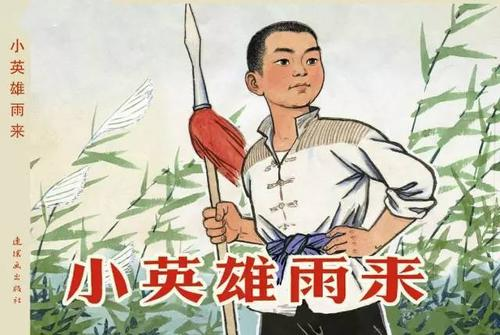

小英雄雨来

-->
抗日战争时期，晋察冀边区的北部有一个小村庄叫芦花村
，12岁的雨来就住在这个村子。雨来的游泳本领非常高。
后来雨来上了夜校，他知道了"我们是中国人，我们爱自己的祖国"这句朴实的话语。
秋天，鬼子又开始扫荡。爸爸妈妈留下雨来一个人在家，
雨来趴在炕上念识字课本，忽然听到街上咕咚咕咚有人跑，
雨来把书塞在怀里就往外跑。他刚迈出门槛，就进来一个人。他抬头一看，
是交通员李大叔，随后听见鬼子呜哩哇啦地叫。
李大叔忙把缸搬开，跑进洞里，小雨来赶紧把缸搬回原处。
雨来刚到堂屋，鬼子就硬闯了进来。
雨来为了掩护李大叔，他在敌人的引诱和严刑拷打下，坚强不屈
，把敌人气得暴跳如雷，嗷嗷地叫:"枪毙!枪毙!拉出去!"这时河边响起几声枪响。
敌人走后，乡亲们来到河边寻找雨来，雨来的朋友铁头等几人都哭了
，铁头说:
"我们沿着河沿往下找雨来的尸体吧!"
就在这时突然水面上露出了一个小脑袋，还像小鸭子一样抖着头上的水。
向岸上说道:"鬼子走了?"大家高兴的叫起来:"雨来没有死!"
原来枪响以前雨来趁鬼子不防备一头扎进河里，鬼子冲着河开枪时，雨来早就从水底游到远处了。